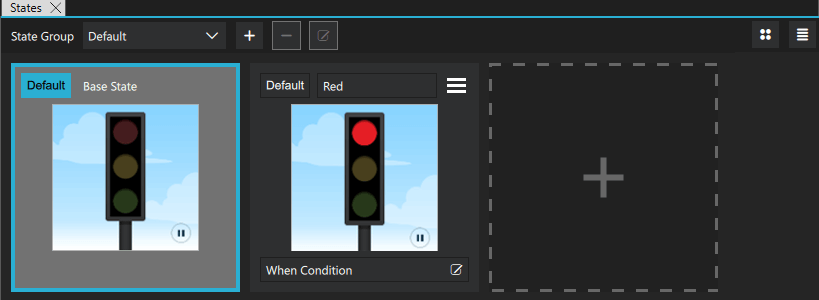

States
The States view displays the different states of a UI.

To open the States view, select View > Views > States.
Initially, States displays a base state that shows the selected component in its initial state. To add states, select  in the States view.
in the States view.
For more information, watch the following video:
See also Working with States.